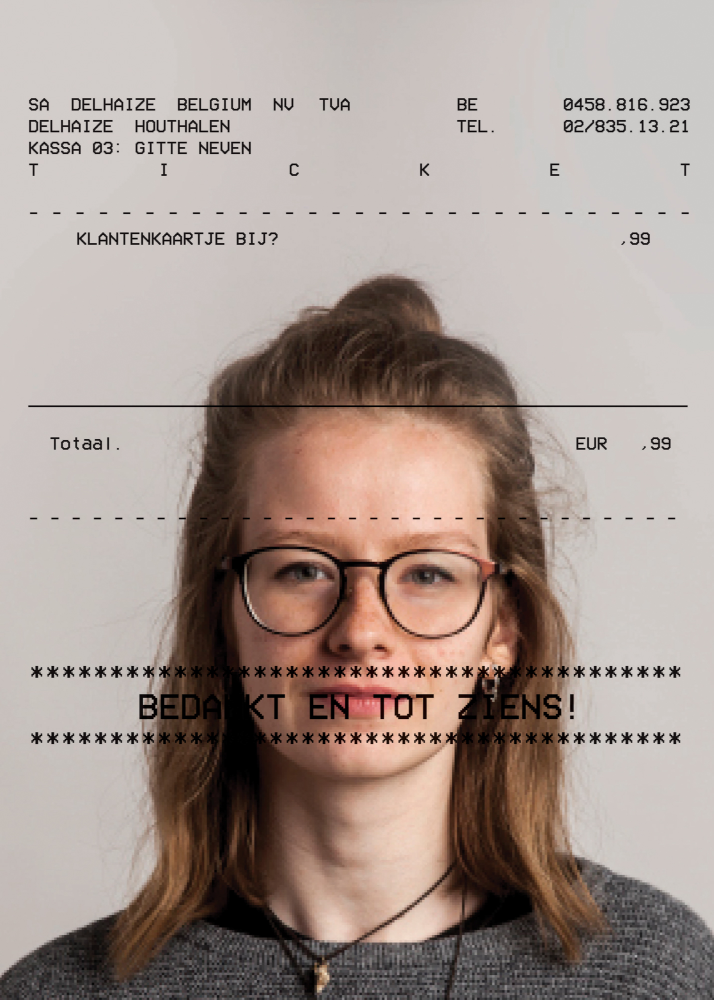
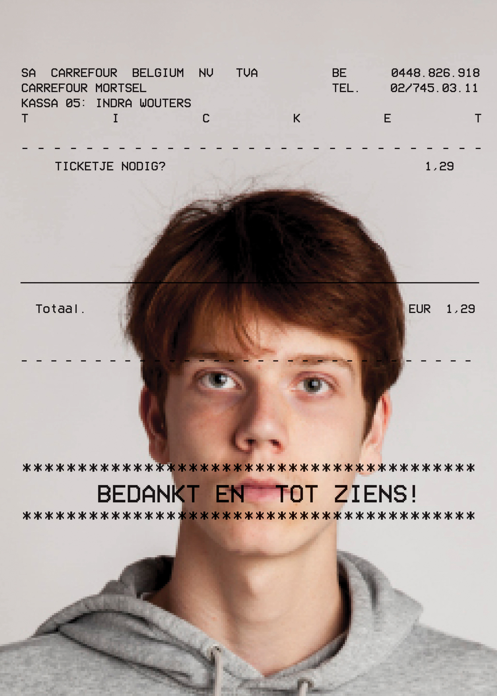

Samen met een collega uitzoeken wat ons gelijk maakt en daaruit een aantrekkelijk design maken. Ons gemeenschappelijk punt was dat we beide een studentenjob hadden in een supermarkt. We hadden hierbij het idee om onze poster te doen lijken op een kassaticket. (2017) 2x A1


ABECEDARIUM
Een boek maken zoals het principe van een abecedarium rond een thema. Een abecedarium wordt vaak gegeven aan kinderen, ze leren hieruit letters associeren met woorden. Bijvoorbeeld: A is voor aap, B is voor banaan, ... Het thema rond mijn abecedarium is 'vieze dingen' dus beelden waarvan we een rilling in ons lichaam krijgen. De woorden die ik vond moest ik dan uitbeelden aan de hand van associaties. (2017-2018)
De opdracht was een LP maken rond de soundtrack van een film. Er was een lijst van al de films waaruit we konden kiezen. De film Under the skin van Jonathan Glazer sprak me enorm aan, niet alleen door de beelden maar ook door de bijpassende muziek van Mica Levi. (2018) Platenhoes + binnenhoes + label
(RADIO)
De huisstijl van onze eigen piratenzender ontwikkelen, oftewel een 'hamradio' creëeren. (RADIO) speelt enkel white noise, witte ruis, deze muziek kan mensen zowel tot rust brengen als frustreren. Via mijn huisstijl wou ik dit dan weergeven aan de hand van voorwerpen een storing te geven. Een strak, afgelijnd voorwerp wordt een absurd beeld dat nog nauwelijks herkenbaar wordt. (2018) Playlist 841x594 + 3 QSL kaarten 140x90 + vlag 100x70